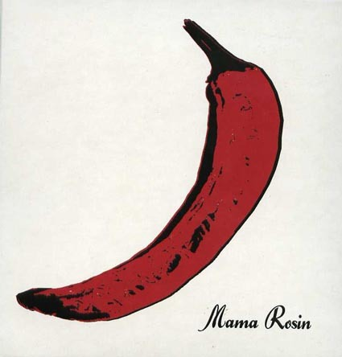

Sunday, January the 9th, 2011
back to: title, date or indexes

“Ducks are a very important part of the Mama Rosin story,” Girod explains. “We have a boat on the lake which we use for birdwatching trips and that is how we became known in Geneva as the Frères Souchet (the name translates as “Wild Duck Brothers”). Also because Cyril sounds a bit like a duck when he sings.”